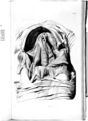

Govard Bidloo, Anatomia humani corporis centum et quinque tabulis per artificiosiss. G. de Lairesse ad vivum delineata, demonstrata [s. Amstelodami, sumptibus viduae Joannis à Someren, haeredum Joannis à Dyk, Henrici et viduae Theodori Boom, 1685. -- (Plano 28 F 1)
Govard Bidloo (1649-1713) werd geboren in Amsterdam en volgde daar als chirurgijnsleerling de lessen van de bekende anatoom Frederik Ruysch. Hij wilde kennelijk meer, want in 1682 promoveerde hij in Franeker in de medicijnen. Vervolgens werd hij tot ‘professor anatomiae’ in Den Haag benoemd en in die stad maakte hij zo’n goede indruk op stadhouder Willem III, dat deze, ook toen hij koning van Engeland was geworden, voor de rest van zijn leven (hij stierf in 1702) van zijn diensten gebruik maakte. In 1701 benoemde hij Bidloo zelfs tot zijn lijfarts. Al eerder had deze de invloed van zijn beschermer ondervonden, toen hij in 1694 tot hoogleraar in Leiden was benoemd. Dat had Bidloo niet uitsluitend aan protectie te danken, want hij was werkelijk een voortreffelijk anatoom. In de laatste tien jaar van zijn leven betoonde hij zich in zijn universitaire werk een plichtsgetrouw en hardwerkend man en verrichtte hij belangrijk werk, onder andere op het gebied van de zenuwen (zie nummer 76).
In 1685 had Bidloo, na jarenlange voorbereiding, een grote anatomische atlas het licht doen zien met honderdvijf platen van de bekende kunstenaar Gerard de Lairesse (1641-1711). Deze platen zijn, nog afgezien van het feit dat de resultaten van het microscopische onderzoek van de laatste jaren erin verwerkt zijn, ook van belang als typische producten van de barok op haar hoogtepunt. De geanatomiseerde lichamen vertonen dramatische of zelfs tragische standen: zo zijn de handen soms samengebonden en ook in andere details, zoals een vlieg bij een geopende buikholte, heeft De Lairesse zich duidelijk uitgeleefd. Ongetwijfeld zullen dergelijke kleine toevoegingen een symbolische betekenis hebben gehad, die voor de tijdgenoten beter verstaanbaar zijn geweest dan voor ons. Maar deze artistieke benadering (Bidloos atlas is de eerste met de naam van de tekenaar van de platen op de titelpagina) is voor Bidloos leermeester Ruysch mede aanleiding geweest scherpe kritiek op de atlas uit te oefenen. De polemiek die daarop volgde werd in de beste zeventiende-eeuwse traditie gevoerd: persoonlijke aanvallen vervingen al gauw de zakelijke. Tevens is de atlas onderwerp van grof plagiaat geweest toen de Engelsman William Cowper (zie nummer 88) in 1697 de platen gebruikte voor zijn atlas. Het werd een geruchtmakende zaak en Bidloo eiste genoegdoening, die hij dan ook kreeg. Toch was de atlas geen commercieel succes. Vijftig jaar na de verschijning waren er nog steeds in voldoende mate exemplaren te koop. Misschien hebben Ruysch’ aanmerkingen daarvoor gezorgd, alsmede het feit dat de atlas, juist door de artistieke benadering van De Lairesse, voor het onderwijs minder geschikt was. Maar die benadering heeft de atlas wèl later bij liefhebbers minstens zo beroemd gemaakt als die van Vesalius bij de echte kenners of als die van Albinus (zie nummer 79) bij beide groepen.
| vorige pagina | top pagina |